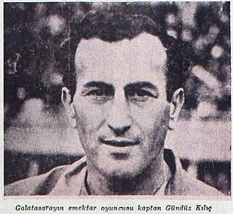
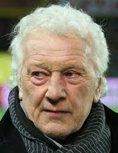
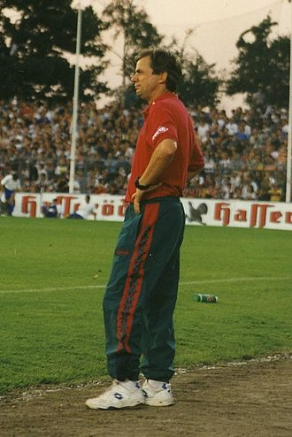
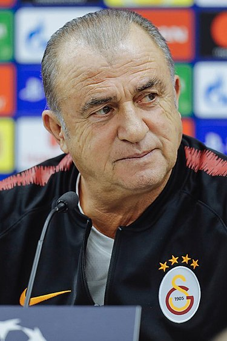
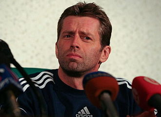

| Sezon |
Antrenör |
Resim |
| 1905-1906 |
Nikolof (Futbolcu) -Bulgaristan |
|
| 1907 |
Emin Bülend (Futbolcu) |
 |
| 1908-1911 |
Horace Armintage (Futbolcu) |
 |
| 1911-1914 |
Emin Bülend (Futbolcu) |
|
| 1915 |
Sadi Bey |
 |
| 1916-1917 |
Ali Sami Yen |
 |
| 1919-1921 |
Necip Şahin (Futbolcu) |
|
| 1922-1923 |
Adil Giray (Futbolcu) |
|
| 1924-1928 |
Billy Hunter - İskoçya |
|
| 1929 |
Nihat Bekdik (Futbolcu) |
 |
| 1930-1931 |
Lamberg - Macaristan |
|
| 1931-1932 |
Fred Pegnam- İngiltere |
|
| 1933-1936 |
S. Pedeafoot - İngiltere |
|
| 1937 |
Hans Baar - Avusturya |
|
| 1938 |
Peter Szabo - Macaristan |
|
| 1938-1939 |
Peter Tandler - Avusturya |
|
| 1939 |
Hayman - İngiltere |
|
| 1939-1940 |
C. Zaharczuk - Polonya |
|
| 1941-1945 |
Jhon Begget - İngiltere |
|
| 1945-1946 |
Miço Dimitriyadis |
|
| 1947 |
J. Szweng - Macaristan |
|
| 1947-1949 |
Pat Molloy - İngiltere |
|
| 1950-1952 |
D. Lockhead - İngiltere |
|
| 1952-1953 |
Gündüz Kılıç |
 |
| 1953-1954 |
Lazlo Szekelly - Macaristan |
|
| 1954-1957 |
Gündüz Kılıç |
|
| 1957-1958 |
JGeorge Dick - İngiltere |
|
| 1959-1960 |
Remondini - İtalya |
|
| 1960-1963 |
Gündüz Kılıç - Coşkun Özarı |
|
| 1964-1967 |
Gündüz Kılıç |
|
| 1967-1968 |
Eşfak Aykaç - Bülent Eken |
 |
| 1968-1970 |
Kaleperoviç - Yugoslavya |
|
| 1970-1971 |
Coşkun Özarı |
|
| 1970-1974 |
Brian Birch - İngiltere |
|
| 1974-1975 |
Don Howe - İngiltere |
 |
| 1975-1976 |
Jack Mansell - İngiltere |
|
| 1976-1977 |
M. Allison - İngiltere |
|
| 1977-1978 |
Fethi Demircan |
|
| 1978-1979 |
Coşkun Özarı |
|
| 1979-1980 |
Turgay Şeren |
 |
| 1980-1982 |
Brian Birch- İngiltere |
|
| 1982-1983 |
Özkan Sümer |
|
| 1983-1984 |
Tomislav İviç - Hırvatistan |
 |
| 1984-1988 |
Jupp Derwall - Almanya |
|
| 1988-1990 |
Mustafa Denizli |
|
| 1990-1991 |
Sigfried Held- Almanya |
|
| 1991-1992 |
Mustafa Denizli |
|
| 1992-1993 |
Karl-Heinz Feldkamp- Almanya |
 |
| 1993-1994 |
Rainer Hollmann - Almanya |
|
| 1994-1995 |
Reinhard Saftig - Almanya |
 |
| 1994-1995 |
Müfit Erkasap |
|
| 1995-1996 |
Graeme Souness - İskoçya |
|
| 1996-2000 |
Fatih Terim |
 |
| 2000-2002 |
Mircea Lucescu - Romanya |
|
| 2002-2004 |
Fatih Terim |
|
| 2004-2005 |
Gheorghe Hagi - Romanya |
 |
| 2005-2007 |
Erik Gerets - Belçika |
|
| 2007-2008 |
Karl-Heinz Feldkamp- Almanya |
|
| 2008 |
Cevat Güler |
 |
| 2008-2009 |
Michael Skibbe - Almanya |
 |
| 2008-2009 |
Bülent Korkmaz |
 |
| 2009-2010 |
Frank Rijkaard - Hollanda |
|
| 2010-2011 |
Gheorghe Hagi - Romanya |
|
| 2011 |
Bülent Ünder |
|
| 2011-2013 |
Fatih Terim |
|
| 2013-2014 |
Roberto Mancini - İtalya |
|
| 2014 |
Cesare Prandelli - İtalya |
|
| 2014 |
Hamza Hamzaoğlu |
|
| 2015-2016 |
Mustafa Denizli |
|
| 2016-2017 |
Jan Olde Riekerink - Hollanda |
|
| 2017 |
Igor Tudor – Hırvatistan |
|
| 2017-2022 |
Fatih Terim |
|
| 2022 |
Doménec Torrent |
|
| 2022 - |
Okan Buruk |
|